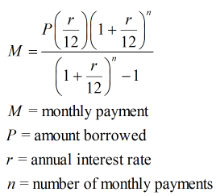

Mortgage calculator
Task overview
Create a web application where users can create banks and calculate mortgage payments using one of these bank’s settings.
Technical details
- Use any programming language, any database management system, any language for the server to manage connections to DB.
- Use any preferred design style or any UI/UX library.
- Banks management page
On this page, a user should be able to see the list of all earlier created banks and create/edit/remove the bank. Banks must be stored in the database, the corresponding API should be provided for that.
Here is the example of bank schema that might be convenient to use during the development (though we encourage you to investigate it a little bit more and find other parameters that are utilized in bank systems nowadays):
- Bank name
- Interest rate - the annual percentage rate that expresses the amount of money the bank charges additionally for the use of assets the person borrowed money for.
- Maximum loan - the maximum amount of money a bank is able to borrow.
- Minimum down payment - the amount of money a person needs to pay upfront (if a person takes a loan of $300.000 and bank minimum down payment is 20%, it means that person must pay the bank $60.000 as an initial mortgage payment)
- Loan term - a period of time in which a person must pay off the loan (usually banks have several loan programs, but for this task, let’s assume each bank has only one fixed term)
- Mortgage calculator page
Here the user can see the payment plan for his mortgage. This page should contain the following inputs:
- Initial loan (example: $280.000)
- Down payment (example: $20.000)
- Bank (enter the name or select from dropdown)
Based on entered data you can apply the next formula to calculate monthly mortgage payment:

User’s entered data should be validated accordingly to the selected bank, for example down payment satisfies the minimum down payment boundary of the bank, the bank is capable of giving a requested loan.
Bonus tasks
- Deploy the application to make it available through the Internet.
- Create a README file with a project setup instruction.
- Implement bank loan history
If a user tried to calculate a mortgage you can keep this record in the database and show this record in the history of the specific bank.